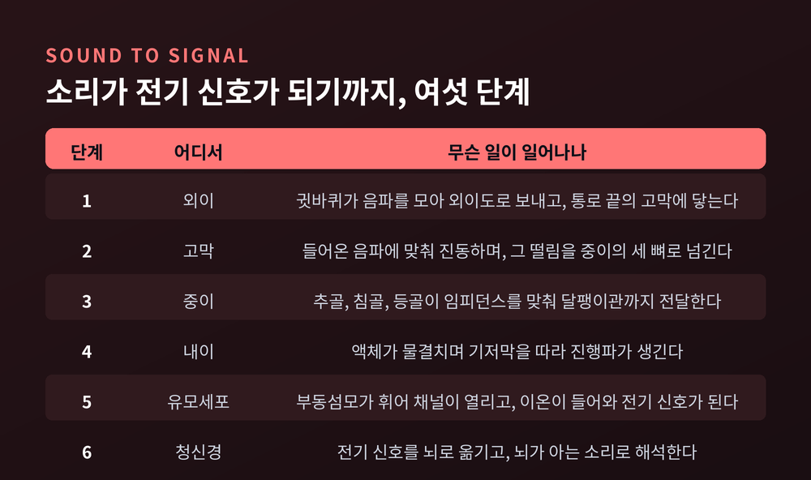
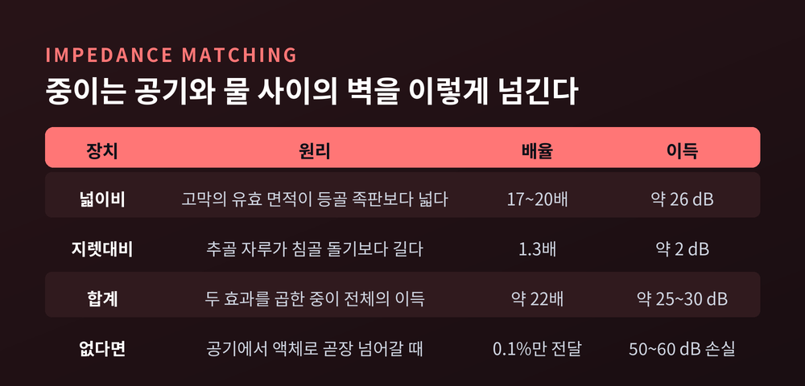
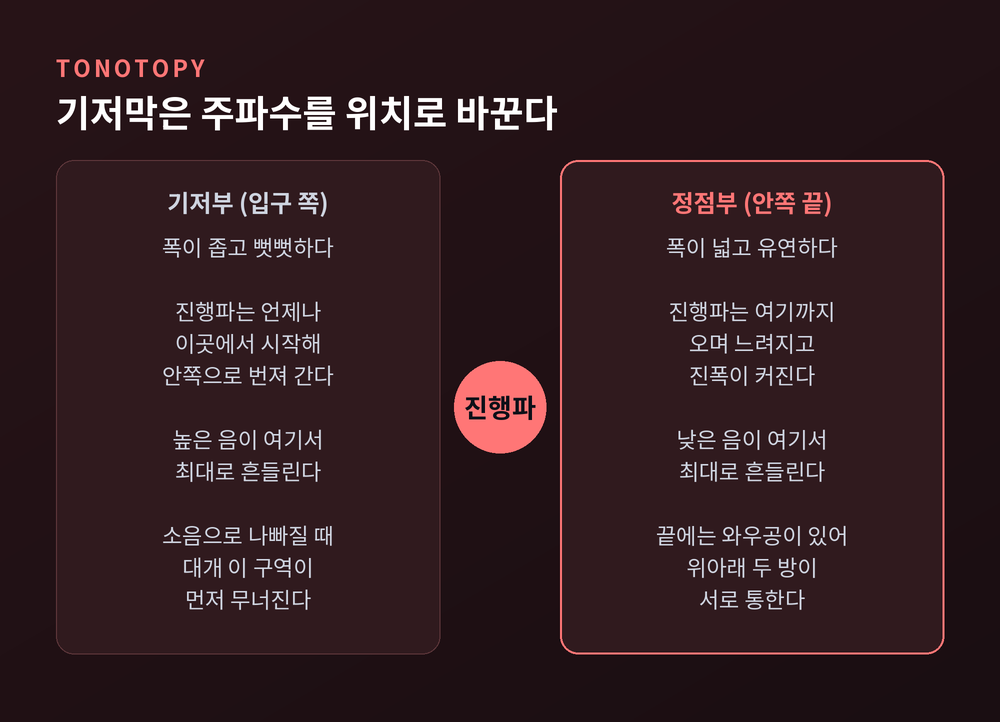
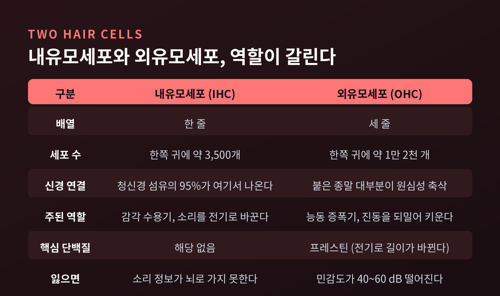
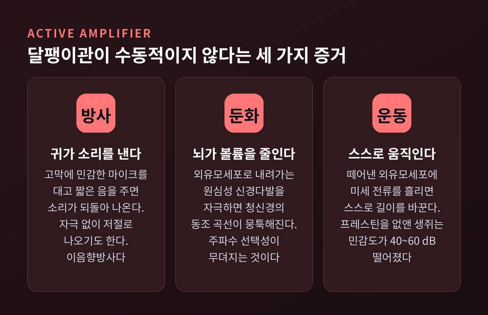
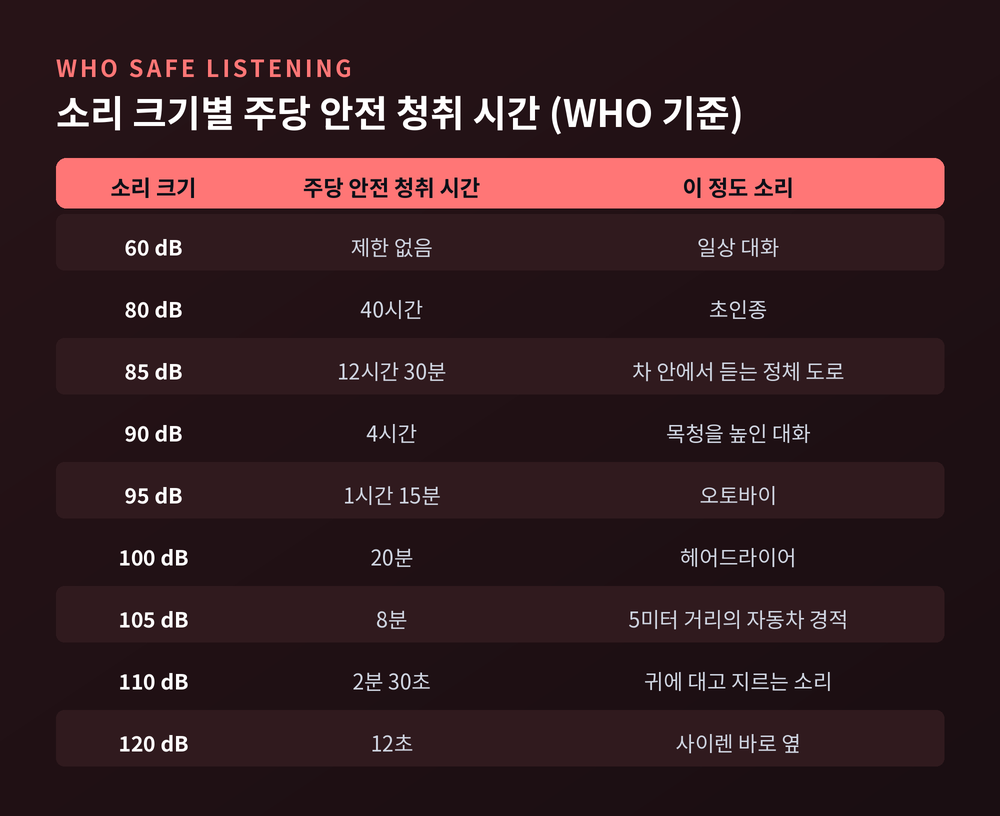

귀가 소리를 듣는 원리, 고막 진동부터 달팽이관 주파수 분해까지
이번 글에서는 귀가 소리를 듣는 원리를 처음부터 끝까지 따라가 보겠습니다. 공기의 떨림이 어떻게 전기 신호가 되는지, 그 사이에 어떤 장치들이 끼어 있는지를 순서대로 정리했습니다.
세 줄 요약
- 중이의 고막과 이소골은 소리를 키우는 장치가 아니라, 공기와 액체 사이의 벽을 넘기는 임피던스 정합 장치입니다. 이 장치가 없으면 소리 에너지의 99.9% 이상이 튕겨 나갑니다.
- 달팽이관은 주파수를 위치로 번역합니다. 높은 음은 입구 쪽, 낮은 음은 안쪽에서 최대로 흔들립니다.
- 유모세포는 소리를 전기로 바꾸는 동시에 스스로 밀어주는 능동 증폭기이기도 합니다. 그리고 사람의 유모세포는 재생되지 않습니다.
소리는 공기의 떨림, 귀는 그 떨림을 받는 창구입니다
소리는 물체의 진동이 공기 분자에 만든 압력의 물결입니다. 이 물결의 초당 반복 횟수가 주파수, 단위는 헤르츠(Hz)입니다.
사람이 들을 수 있는 범위는 젊은 귀 기준으로 대략 20 Hz에서 20,000 Hz입니다. 그중에서도 1,000~4,000 Hz 대역에 가장 예민합니다. 세기로 보면 0 dB에서 130 dB 정도가 사람의 청각 범위이고, 130 dB 부근에서 소리는 감각이 아니라 통증이 됩니다.
귓바퀴는 이 물결을 모읍니다. 모은 소리를 깔때기 같은 외이도로 밀어 넣고, 외이도 끝에 고막이 기다립니다. 외이도는 바깥 3분의 2가 연골, 안쪽 3분의 1이 뼈이며, 바깥쪽에는 기름샘이 있어 귀지를 만들어 통로를 지킵니다.
여기서 한 가지 덧붙일 점이 있습니다. 외이도는 단순한 통로가 아니라 공명관입니다. 다만 이 공명은 파장이 짧은 소리, 대략 2,000~7,000 Hz 대역에서만 작동합니다. 우리가 모음과 자음을 또렷이 구분해 듣는 능력이 바로 이 대역의 민감도와 맞닿아 있습니다.

중이의 진짜 임무는 증폭이 아니라 정합입니다
여기서 물리적으로 곤란한 문제가 하나 생깁니다.
바깥에서 온 소리는 공기 중을 달리는 진동입니다. 그런데 진동이 신경 신호로 바뀌는 내이는 액체로 가득 찬 공간입니다.
임피던스는 매질이 움직임에 저항하는 정도를 뜻합니다. 임피던스가 높다는 것은 그것을 움직이려면 더 큰 압력이 필요하다는 뜻입니다. 공기처럼 임피던스가 낮은 매질에서 물처럼 높은 매질로 소리가 넘어갈 때는, 음향 에너지의 99.9% 이상이 반사되어 되돌아갑니다.
머리를 물에 담근 채로는 옆 사람이 하는 말이 잘 들리지 않습니다. 같은 이유입니다.
중이는 이 손실을 메우려고 존재합니다. 두 가지 장치를 씁니다.
첫째, 넓이비입니다. 고막의 유효 진동 면적은 등골 족판보다 17~20배 넓습니다. 실측하면 고막이 약 69 mm², 등골 족판이 약 3.4 mm² 정도입니다. 같은 힘이 20배 좁은 면적에 몰리니 단위면적당 압력이 그만큼 커집니다. 압정이 뾰족한 끝에서 압력을 키우는 것과 같은 원리입니다.
둘째, 지렛대비입니다. 추골의 자루가 침골의 긴 돌기보다 약 1.3배 깁니다. 이 길이 차이가 힘을 키우고 속도를 줄입니다. 짐이 바퀴에 가까울수록 들기 쉬운 외바퀴 손수레와 같습니다.
두 효과를 곱하면 중이의 기계적 이득은 약 22배, 압력으로는 약 25~30 dB입니다. 그 덕분에 음향 에너지의 90% 이상이 달팽이관까지 도달합니다. 반대로 이소골 연쇄가 끊어지면 50~60 dB의 전음성 난청이 생길 수 있습니다.
다만 이 설명이 완전하지는 않습니다. 레이저 간섭계 실험을 보면 고막과 이소골의 반응은 주파수에 따라 크게 달라집니다. 넓이비와 지렛대비만으로 정리하는 방식은 교과서적 모델이고, 실제 중이는 그보다 복잡하게 움직입니다.

달팽이관은 주파수를 위치로 번역합니다
등골이 난원창을 피스톤처럼 밀면, 그 진동은 액체로 옮겨 갑니다.
달팽이관은 지름 10 mm 남짓한 나선입니다. 풀어 펴면 길이 35 mm쯤 되는 관이고, 태아 시기 10주경 두 바퀴 반의 코일을 이룹니다. 내부는 전정계, 중간계, 고실계 세 방으로 나뉘어 있습니다.
핵심은 중간계와 고실계를 가르는 기저막입니다.
기저막은 폭과 뻣뻣함이 균일하지 않습니다. 입구 쪽인 기저부에서는 좁고 단단하고, 안쪽 정점부로 갈수록 넓고 유연해집니다. 이런 구조에서는 에너지가 어디서 들어오든 움직임이 항상 뻣뻣한 쪽에서 시작해 유연한 쪽으로 번져 갑니다.
헝가리 출신 연구자 게오르크 폰 베케시가 이 현상을 밝혔습니다. 그는 튜브 모형과 사체 표본으로, 소리 자극이 기저막을 따라 진행파를 만든다는 것을 보였습니다. 이 파도는 기저부에서 정점부로 나아가며 진폭이 커지고 속도가 느려지다가, 어느 지점에서 최대 변위에 이릅니다. 그 지점의 위치를 정하는 것이 바로 소리의 주파수입니다.
높은 음은 입구 쪽에서, 낮은 음은 안쪽에서 최대로 흔들립니다. 주파수가 위치로 지도화되는 이 배치를 토노토피라고 부릅니다.
가장 인상적인 대목은 그다음입니다. 여러 음이 섞인 복잡한 소리가 들어오면, 기저막은 그 소리를 이루는 개별 음들이 각각 만들었을 진동을 그대로 겹쳐 놓은 패턴으로 흔들립니다. 달팽이관은 별도의 계산 없이, 구조 하나로 소리를 성분별로 풀어헤치는 기계식 주파수 분석기인 셈입니다.

유모세포 1만 6천 개가 만드는 전기 신호
기저막 위에는 코르티기관이 얹혀 있고, 그 안에 감각세포인 유모세포가 줄지어 있습니다.
사람의 유모세포는 내유모세포 한 줄과 외유모세포 세 줄로 배열됩니다. 개수는 한쪽 귀에 내유모세포 약 3,500개, 외유모세포 약 1만 2천 개 수준입니다. 합쳐서 1만 6천 개 남짓, 참깨 몇 알 부피에도 못 미치는 규모입니다.
변환 과정은 이렇습니다.
진행파가 기저막을 밀어 올릴 때, 기저막과 그 위를 덮은 개막은 회전축이 서로 어긋나 있습니다. 그래서 수직 운동이 옆으로 미끄러지는 전단 운동으로 바뀝니다. 이 미끄러짐이 유모세포 꼭대기의 부동섬모를 휘게 합니다.
부동섬모가 휘면 그 끝의 기계적 개폐 채널이 열립니다. 그러면 이온이 세포 안으로 밀려 들어오고, 세포의 막전위가 바뀌면서 전기 신호가 생깁니다.
이온이 밀려 들어올 수 있는 이유는 달팽이관 안에 미리 걸어둔 전압 때문입니다. 중간계를 채운 내림프는 칼륨이 주 양이온이라, 주변 외림프보다 전위가 80~90 mV 더 양(+)입니다. 측벽의 혈관조가 이 상태를 유지합니다. 귀 안에 작은 배터리가 상시 충전되어 있는 것과 같습니다.
역할은 둘로 갈립니다. 실제 감각 수용기는 내유모세포입니다. 뇌로 올라가는 청신경 섬유의 95%가 내유모세포에서 나옵니다. 외유모세포에 붙은 종말은 대부분 반대 방향, 즉 뇌에서 내려오는 원심성 축삭입니다.

귀는 듣기만 하지 않습니다, 스스로 소리를 냅니다
그렇다면 외유모세포는 왜 훨씬 많은 걸까요.
예전에는 달팽이관을 수동적인 장치로 보았습니다. 베케시의 모형이 그랬습니다. 기저막을 서로 이어진 소리굽쇠 묶음처럼, 물리적 성질만으로 주파수를 가르는 구조로 이해했습니다.
지금은 다르게 봅니다. 실제 청각의 주파수 동조는 수동 역학만으로 설명하기에는 너무 날카롭습니다. 특히 아주 작은 소리에서 기저막은, 큰 소리에서 측정한 값을 선형으로 늘려 예측한 것보다 훨씬 크게 움직입니다. 어딘가에서 에너지를 보태고 있다는 뜻입니다.
증거는 세 갈래로 모였습니다.
첫째, 귀가 소리를 냅니다. 고막에 민감한 마이크를 대고 짧은 음을 준 뒤 반응을 살피면 소리가 되돌아 나옵니다. 자극 없이 저절로 나오기도 합니다. 이 현상을 이음향방사라고 합니다.
둘째, 외유모세포로 내려가는 원심성 신경다발을 자극하면 청신경의 동조 곡선이 뭉툭해집니다. 주파수 선택성이 무뎌지는 것입니다.
셋째, 떼어낸 외유모세포에 미세 전류를 흘리면 세포가 스스로 길이를 바꿉니다. 변환 과정이 거꾸로 돌아가는 셈입니다.

이 운동을 담당하는 단백질이 프레스틴입니다. 프레스틴을 제거한 생쥐는 기계적 변환 자체는 멀쩡한데도 청각 민감도가 40~60 dB 떨어졌습니다.
숫자를 나란히 놓으면 그림이 분명해집니다. 중이가 약 25~30 dB를 벌고, 외유모세포의 능동 증폭이 그 위에 40~60 dB를 얹습니다. 우리가 나뭇잎 스치는 소리까지 듣는 것은, 두 층의 증폭이 포개진 결과입니다.
전기 신호가 뇌에 닿기까지
유모세포가 만든 신호는 나선신경절 뉴런을 거쳐 와우신경, 즉 8번 뇌신경을 타고 올라갑니다.
경로는 여러 정거장을 지납니다. 와우핵에서 시작해 상올리브핵, 외측섬유대, 하구, 내측슬상체를 거쳐 청각피질에 도달합니다. 이 경로를 지나며 소리의 주파수, 강도, 공간적 위치가 부호화됩니다.
부호화 방식도 두 가지가 겹칩니다. 하나는 앞서 본 위치 정보입니다. 어느 신경섬유가 반응했는가가 곧 어떤 주파수인가를 알려줍니다. 다른 하나는 시간 정보입니다. 청신경의 발화가 소리 파형의 위상에 맞춰 정확히 동기화되는 현상을 위상 잠금이라 부릅니다.
위상 잠금은 대략 수 킬로헤르츠까지 관찰됩니다. 다만 정확한 상한선은 아직 논쟁 중이고, 연구자에 따라 추정치의 폭이 상당히 큽니다. 확정된 사실처럼 말하기는 어렵습니다.
분명한 것은, 음높이 지각과 말소리 이해가 이 시간 정보에 기대고 있다는 점입니다.
한번 잃은 유모세포는 돌아오지 않습니다
지금까지 살펴본 구조는 정교하지만, 그만큼 약합니다.
70 dBA 이하의 소리는 오래 들어도 청력을 해칠 가능성이 낮습니다. 그러나 85 dBA 이상의 소리에 길게, 또는 반복해서 노출되면 난청이 생길 수 있습니다. 소리가 클수록 손상까지 걸리는 시간은 짧아집니다.
참고할 만한 수치를 옮겨 둡니다. 일상 대화가 60~70 dBA, 오토바이가 80~110 dBA, 최대 볼륨의 헤드폰 음악과 콘서트가 94~110 dBA입니다.
세계보건기구는 좀 더 구체적인 기준을 제시합니다. 80 dB의 소리는 주당 40시간까지 안전하게 들을 수 있습니다. 90 dB이면 주 4시간으로 줄어듭니다. 100 dB에서는 20분, 110 dB에서는 2분 30초입니다.
권고 사항도 단순합니다. 기기 볼륨을 최대치의 60% 이하로 유지하고, 잘 맞는 노이즈 캔슬링 헤드폰을 쓰고, 한 시간마다 10분씩 조용한 곳에서 귀를 쉬게 하라는 것입니다. 팔 하나 거리에 있는 사람에게 말하려고 목소리를 높여야 한다면, 그곳은 이미 너무 시끄럽습니다.
문제는 회복 가능성입니다. 조류나 양서류는 손상된 유모세포를 다시 만들어냅니다. 사람의 유모세포는 재생되지 않습니다. 한번 없어지면 영영 없어집니다.
콘서트 뒤에 귀가 먹먹하거나 울리는 것은 감각세포가 피로해진 상태입니다. 대개는 회복됩니다. 그러나 반복되고 길어지면 감각세포와 주변 구조가 영구적으로 손상됩니다. 충격음이나 지속적 소음 뒤의 일시적 난청이 16~48시간 만에 사라지더라도, 최근 연구는 장기적인 잔여 손상이 남을 수 있다고 봅니다.
이명도 같은 뿌리에서 나옵니다. 외부 소리가 없는데도 울림이나 윙윙거림을 느끼는 증상이며, 3개월을 넘기면 만성으로 분류합니다. 큰 소리 노출이 내이 유모세포를 상하게 하고, 그것이 난청과 이명으로 이어집니다.
숫자로 보면 규모가 작지 않습니다. 세계보건기구는 2050년까지 약 25억 명이 어느 정도의 난청을 갖게 될 것으로 봅니다. 열 명 중 한 명꼴입니다. 지금도 안전하지 않은 청취 습관 탓에 10억 명이 넘는 젊은 성인이 예방 가능한 난청 위험에 놓여 있습니다.
귀울림이 계속되거나 높은 음이 잘 들리지 않는다면, 혼자 판단하지 마시고 이비인후과 진료를 받아 보시길 권합니다.

정리하면 이렇습니다.
귀는 소리를 키우는 기관이 아닙니다. 공기와 물 사이에 놓인 벽을 넘기고, 뒤섞인 진동을 성분별로 펼쳐 놓고, 그것을 전기로 옮겨 적는 번역 장치입니다. 고막과 이소골이 임피던스를 맞추고, 기저막이 주파수를 위치로 바꾸고, 유모세포가 그 움직임을 전압으로 바꿉니다.
이 모든 일이 1만 6천 개 남짓한 세포에서, 그것도 되돌릴 수 없는 조건으로 일어납니다.
"들린다는 것은 당연한 일이 아니라, 매 순간 성립하고 있는 일입니다."
오늘 이어폰 볼륨을 한 칸 낮출 이유가 있느냐고 물으신다면, 저는 충분히 있다고 답하겠습니다.